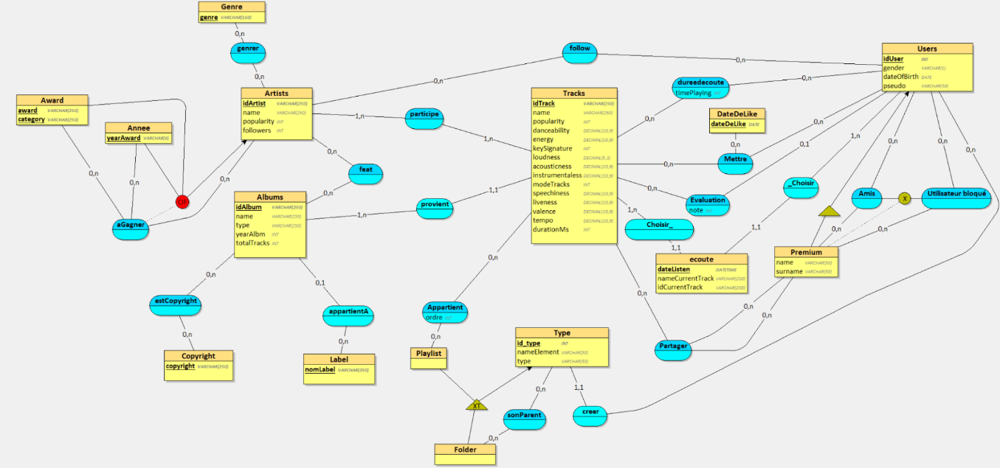
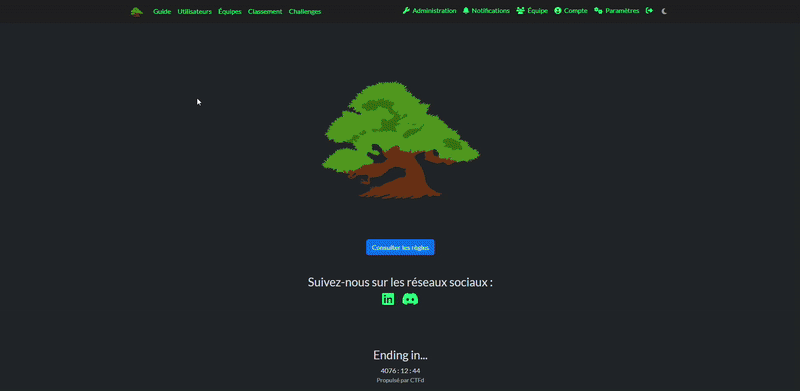
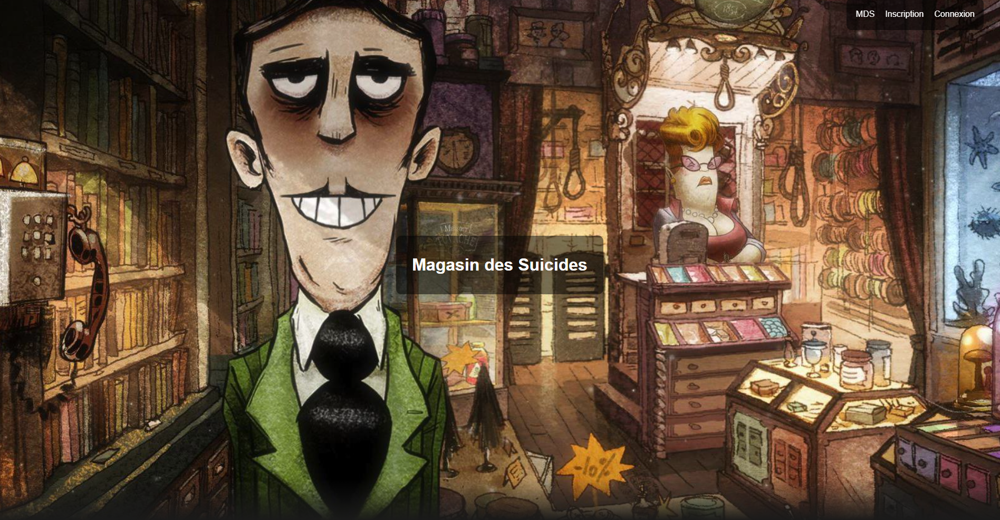
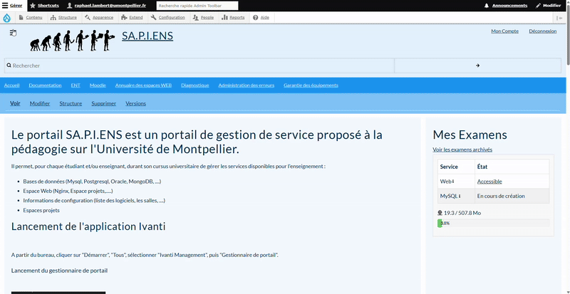
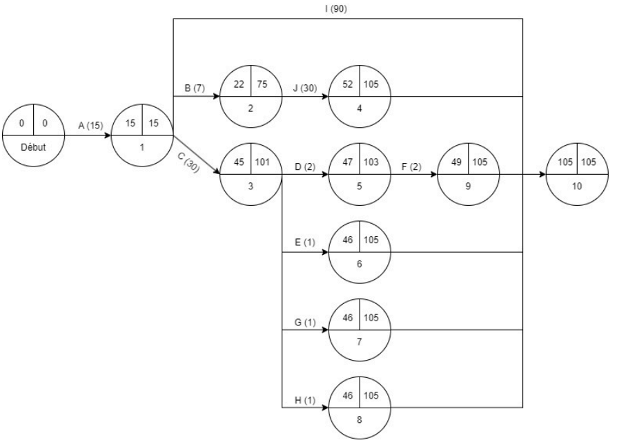
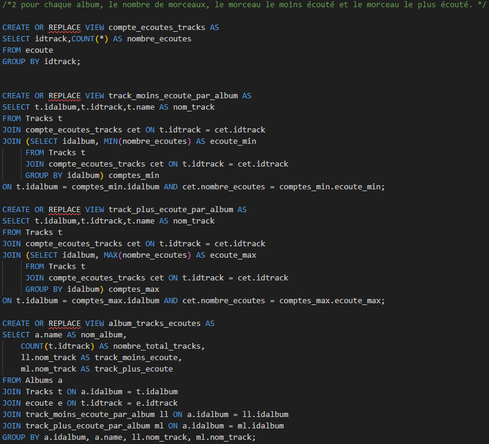
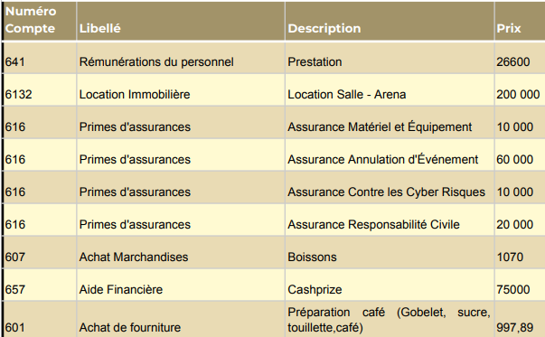

Portfolio d'Apprentissage
Analyse Réflexive des Compétences
Dans cette section essentielle de mon portfolio, je propose une analyse réflexive et critique des compétences acquises durant mon parcours en BUT Informatique parcours IAMSI (Intégration d'Applications et Management du Système d'Information). Je documente ma trajectoire de développement en mobilisant des traces concrètes issues de l'ensemble de mes mises en situation professionnelle.
Cette démarche s'inscrit dans une perspective de documentation rigoureuse de ma trajectoire de développement professionnel, où chaque compétence est mise en relation avec des traces tangibles issues de mes différentes mises en situation professionnelle.
Dans le parcours IAMSI, trois compétences s'arrêtent au niveau 2 :
- Optimiser (Niveau 2 : Sélectionner les algorithmes adéquats pour répondre à un problème donné)
- Administrer (Niveau 2 : Déployer des services dans une architecture réseau)
- Gérer (Niveau 2 : Optimiser une base de données, interagir avec une application et mettre en œuvre la sécurité)
Trois compétences atteignent le niveau 3 en fin de formation :
- Réaliser (Niveau 3 : Adapter des applications sur un ensemble de supports embarqué, web, mobile, IoT…)
- Conduire (Niveau 3 : Participer à la conception et à la mise en œuvre d'un projet système d'information)
- Collaborer (Niveau 3 : Manager une équipe informatique)
1. Compétence "Optimiser" (Niveau 2)
AC1 : Choisir des structures de données complexes adaptées au problème
en formalisant et modélisant des situations complexes (CE2.01)Développement du jeu 'Trains'
Pour représenter efficacement le plateau de jeu et les connexions ferroviaires, j'ai implémenté une structure de graphe pondéré, où chaque nœud représentait une ville et chaque arête une connexion potentielle. Cette approche a nécessité une formalisation précise et m'a permis de gérer efficacement les calculs de chemins optimaux.

Base de Données pour Streaming Musical
J'ai conçu un modèle entité-association capable de représenter des relations complexes entre artistes, albums, morceaux et playlists. La modélisation de hiérarchies dans les playlists a particulièrement nécessité une réflexion approfondie sur les structures de données les plus adaptées.

AC2 : Utiliser des techniques algorithmiques adaptées pour des problèmes complexes
en s'appuyant sur des schémas de raisonnement (CE2.03)Jeu 'Trains'
J'ai implémenté l'algorithme de Dijkstra pour calculer les chemins optimaux entre les villes, en prenant en compte différents critères d'optimisation (distance, coût, temps). Cette implémentation m'a permis de comprendre les subtilités des algorithmes de parcours de graphes et d'apprécier leur puissance dans la résolution de problèmes concrets.
Projet CTFD
J'ai conçu plusieurs défis de cybersécurité nécessitant des algorithmes sophistiqués, notamment un défi de stéganographie utilisant la manipulation des chunks PNG. Cette expérience m'a poussé à explorer des techniques algorithmiques avancées et à comprendre leur application dans un contexte de sécurité informatique.

AC3 : Comprendre les enjeux et moyens de sécurisation des données et du code
en justifiant les choix et validant les résultats (CE2.04)Projet E-commerce
J'ai implémenté un système d'authentification robuste incluant des protections contre les attaques par force brute, et j'ai veillé à sécuriser les transactions et les données utilisateur. Ce travail m'a sensibilisé à l'importance cruciale de la sécurité dans le développement web moderne.

Stage DSIN
J'ai mis en œuvre des mécanismes de chiffrement pour les données sensibles et sécurisé l'interaction avec le LDAP universitaire. Ces expériences pratiques ont consolidé ma compréhension des principes fondamentaux de la sécurité informatique.

AC4 : Évaluer l'impact environnemental et sociétal des solutions proposées
en justifiant les choix et validant les résultats (CE2.04)Projet Controverse
Ce projet m'a offert l'opportunité de réfléchir aux implications éthiques et sociétales des technologies numériques, notamment concernant la tension entre vie privée et sécurité nationale. Cette réflexion m'a sensibilisé à l'importance d'une démarche responsable dans le développement technologique.
Charlie's Festival Adventure
Nous avons intégré une dimension environnementale en optimisant l'infrastructure technique pour réduire l'empreinte carbone de l'événement. Cette approche m'a fait prendre conscience de la responsabilité des développeurs dans la conception de solutions durables.

2. Compétence "Administrer" (Niveau 2)
AC1 : Concevoir et développer des applications communicantes
en sécurisant le système d'information (CE3.01)Projet CTFD pour Yggame
J'ai dû intégrer la plateforme CTFd avec les conteneurs Docker hébergeant les différents défis, en établissant des mécanismes de communication sécurisés. Cette expérience m'a permis de comprendre les enjeux de l'interopérabilité et de la sécurisation des échanges entre composants d'un système distribué.
Stage DSIN
J'ai développé des modules de communication avec des API externes (notamment Ivanti pour l'inventaire du matériel informatique), en implémentant des mécanismes d'authentification avancés et de gestion des erreurs. Ce travail m'a confronté aux défis réels des applications communicantes en environnement d'entreprise.
AC2 : Utiliser des serveurs et des services réseaux virtualisés
en offrant une qualité de service optimale (CE3.02)Projet CTFD
J'ai déployé la plateforme CTFd et ses défis sur un serveur VPS en utilisant Docker, créant un environnement modulaire où chaque défi était isolé dans son propre conteneur. Cette approche m'a fait découvrir les avantages considérables de la conteneurisation en termes de flexibilité, d'isolation et de reproductibilité des environnements.
Stage DSIN
J'ai utilisé l'outil DDev pour créer un environnement de développement conteneurisé spécifique à l'écosystème Drupal. Cette expérience m'a permis d'apprécier comment la virtualisation peut standardiser les environnements de développement et éliminer les problèmes de compatibilité.
AC3 : Sécuriser les services et données d'un système
en sécurisant le système d'information (CE3.01) et en appliquant les normes en vigueur (CE3.03)Projet E-commerce
J'ai implémenté diverses mesures de sécurité pour protéger les données sensibles des utilisateurs, notamment un système de validation d'email pour l'inscription et des protections contre les attaques par force brute. Ce travail m'a sensibilisé à l'importance de la sécurité des données personnelles et à la responsabilité des développeurs dans leur protection.
Stage DSIN
J'ai dû appliquer rigoureusement les normes de sécurité en vigueur dans le contexte universitaire, notamment pour la gestion des données académiques et la synchronisation avec le LDAP. Cette expérience m'a fait comprendre l'importance d'aligner les pratiques de sécurisation avec les cadres réglementaires existants.
3. Compétence "Gérer" (Niveau 2)
AC1 : Optimiser les modèles de données de l'entreprise
en respectant les réglementations sur le respect de la vie privée et la protection des données personnelles (CE4.01)Base de Données pour Streaming Musical
J'ai conçu et optimisé un modèle de données complexe pour une application de streaming musical, en intégrant les contraintes de performances et de confidentialité des données utilisateur. La normalisation de la base de données et l'optimisation des requêtes ont été au cœur de mon travail, tout en respectant les principes de protection des données personnelles selon le RGPD.
Stage DSIN - Migration SAPIENS
Lors de la migration de Drupal 7 vers Drupal 10, j'ai restructuré et optimisé les modèles de données existants pour améliorer les performances et la sécurité. J'ai particulièrement travaillé sur l'optimisation des requêtes d'accès aux données d'inventaire et la mise en place de mécanismes de cache stratifiés.
AC2 : Assurer la confidentialité des données (intégrité et sécurité)
en respectant les enjeux économiques, sociétaux et écologiques (CE4.02)Projet E-commerce
J'ai implémenté un système complet de gestion sécurisée des données clients, incluant le chiffrement des informations sensibles, la validation des données d'entrée et la mise en place de mécanismes d'audit pour tracer les accès aux données personnelles. Une attention particulière a été portée à l'équilibre entre sécurité et performance.
Projet CTFD
Dans le cadre du développement des défis de cybersécurité, j'ai mis en place des mécanismes robustes de protection des données des participants, tout en gérant les aspects de performance pour supporter une charge importante d'utilisateurs simultanés. Cette expérience m'a sensibilisé aux enjeux de protection des données dans un contexte de compétition.
AC3 : Organiser la restitution de données à travers la programmation et la visualisation
en s'appuyant sur des bases mathématiques (CE4.03)Base de Données pour Streaming Musical
J'ai développé des vues complexes et des requêtes statistiques avancées pour analyser les données d'écoute, incluant des calculs de médiane, d'écart-type et de corrélations. Ces analyses ont été rendues accessibles via des tableaux de bord interactifs permettant une visualisation claire des tendances musicales.

Charlie's Festival Adventure
J'ai conçu et développé des outils de visualisation pour le suivi des inscriptions et la gestion des tournois, en utilisant des techniques de représentation graphique pour faciliter la prise de décision. Les données étaient organisées sous forme de diagrammes de Gantt et de graphiques de performance pour optimiser la planification de l'événement.

AC4 : Manipuler des données hétérogènes
en assurant la cohérence et la qualité (CE4.02)Stage DSIN - Intégration de données
J'ai dû gérer l'intégration de données provenant de sources hétérogènes : base de données Drupal, API Ivanti, annuaire LDAP et système Apogée. Cette expérience m'a confronté aux défis de la cohérence des données, de la gestion des formats différents et de la synchronisation entre systèmes autonomes.
Projet Base de Données Streaming
J'ai développé des mécanismes d'importation et de transformation de données à partir de fichiers CSV hétérogènes, en mettant en place des contrôles de qualité et des processus de validation pour assurer la cohérence des données intégrées. Cette expérience m'a appris l'importance de la qualité des données dans les systèmes d'information.
1. Réaliser - Niveau 3
Adapter des applications sur un ensemble de supports (embarqué, web, mobile, IoT…) - CE1.01 · CE1.03 · CE1.04 · CE1.06
AC1 - Choisir et implémenter les architectures adaptées
CE1.06 | en choisissant les ressources techniques appropriées · CE1.04 | en veillant à la qualité du codeMirukai - Architecture full-stack Next.js
Sur Mirukai, j'ai conçu seul l'architecture complète : Next.js 16 App Router pour unifier frontend et API Routes, PostgreSQL pour le catalogue (~3 500 animés), Redis pour le cache multi-niveaux (TTL 1h, rate limiting) et Docker Compose pour l'isolation des services. Chaque choix était délibéré : iron-session pour les sessions chiffrées, scrypt natif Node.js pour le hachage timing-safe. Cette architecture supporte deux environnements indépendants (prod/dev) sur la même infrastructure Proxmox.

Capital Wars - Architecture MVCS et système de plugins
Sur Capital Wars, nous avons conçu une architecture MVCS sur Symfony 6.4 avec un choix architectural central : le système de plugins modulaires. Chaque plugin implémente des interfaces SOLID (PluginBilanContributorInterface, PluginResultatContributorInterface, DecisionsContribute), garantissant que le noyau reste stable tandis que les extensions sont indépendantes. L'activation dynamique via JSON et la commande make:plugin illustrent une architecture pensée pour l'adaptabilité exactement ce que vise l'AC1 de Réaliser niveau 3.

AC2 - Faire évoluer une application existante
CE1.01 | en respectant les besoins décrits par le client · CE1.04 | en veillant à la qualité du codeStage DSIN - Migration SA.P.I.E.N.S de Drupal 7 vers Drupal 10
Le stage DSIN est la trace la plus directe de cet AC : faire évoluer une application existante en production, critique pour des milliers d'utilisateurs, sans interrompre le service. La migration impliquait une refonte architecturale profonde (réécriture des modules en API Symfony, migration des hooks vers des Event Listeners) tout en préservant toutes les fonctionnalités métier. J'ai appliqué une démarche rigoureuse : audit du code legacy, migration incrémentale, tests de non-régression et documentation des changements.
Capital Wars - Évolution itérative sur un an
Capital Wars a été développé sur l'intégralité de l'année académique 2025–2026 (S5 + S6), ce qui a impliqué de faire évoluer continuellement une base de code existante à chaque sprint. Le système de plugins a été la réponse à ce défi : plutôt que modifier le noyau, les plugins Bourse, Chat, RH et Événements PESTEL ont été greffés sur une architecture stable. Les tests PHPUnit, le CI/CD GitHub Actions et l'analyse SonarQube (couverture 60 %) assuraient la qualité à chaque évolution.
AC3 - Intégrer des solutions dans un environnement de production
CE1.06 | en choisissant les ressources techniques appropriées · CE1.03 | en appliquant les principes algorithmiquesMirukai - Déploiement continu sur infrastructure auto-hébergée
Mirukai est en production réelle sur mirukai.rlbrt.fr. Un push sur main déclenche GitHub Actions, qui construit l'image Docker, la pousse sur GHCR, puis déploie par SSH sur le CT Proxmox sans downtime (docker compose up --no-deps). Nginx assure le SSL Let's Encrypt et le routage vers prod (port 8080) et staging (port 8081). Cet AC3 est le plus concret : l'application est publique, maintenue et déployée en continu ce n'est pas un exercice pédagogique.
Stage DSIN - Intégration en environnement universitaire critique
Intégrer la migration SAPIENS dans un SI universitaire en production imposait une exigence de disponibilité permanente. L'intégration avec le LDAP de l'UM, l'API Ivanti et le système Apogée a nécessité une maîtrise des protocoles d'intégration en environnement institutionnel bien plus contraignant qu'un contexte académique. Chaque composant migré était validé en staging avant déploiement sur l'environnement de production.
2. Conduire - Niveau 3
Participer à la conception et à la mise en œuvre d'un projet système d'information - CE5.01 · CE5.02 · CE5.03 · CE5.04
AC1 - Mesurer les impacts économiques, sociétaux et technologiques d'un projet informatique
CE5.03 | en sensibilisant à une gestion éthique, responsable et durable · CE5.04 | en adoptant une démarche proactiveStage DSIN - Impact institutionnel de la migration SAPIENS
La migration de SA.P.I.E.N.S avait des impacts mesurables. Technologique : passage de Drupal 7 (fin de support) à Drupal 10, éliminant les risques de sécurité. Sociétal : la plateforme gère les salles informatiques et les examens numériques pour des milliers d'étudiants une interruption aurait des conséquences directes sur les études. Économique : rationaliser l'infrastructure réduit la charge de maintenance des équipes DSI à long terme. J'ai intégré cette dimension d'impact dans chaque décision, priorisant la continuité de service sur la rapidité.
Mirukai - Évaluation des impacts dans un projet personnel
Sur Mirukai, j'ai été confronté à des impacts économiques et éthiques réels : les appels Gemini 2.0 Flash ont un coût par requête, ce qui a justifié le fallback Groq et le cache agressif. Côté données personnelles, les listes d'animés révèlent des préférences culturelles sensibles j'ai délibérément minimisé le stockage et sécurisé les sessions (iron-session, scrypt). Ces choix éthiques conscients ont guidé l'architecture autant que les contraintes techniques.
AC2 - Savoir intégrer un projet informatique dans le système d'information d'une organisation
CE5.01 | en communiquant efficacement avec les différents acteurs · CE5.02 | en respectant les règles juridiquesStage DSIN - Intégration au SI de l'Université de Montpellier
SAPIENS s'inscrit dans un écosystème SI universitaire complexe : synchronisation avec le LDAP de l'UM (authentification centralisée), l'API Ivanti (inventaire matériel), le système Apogée (données étudiantes) et les bases de données pédagogiques. Chaque connexion respectait les protocoles de sécurité institutionnels et les contraintes RGPD liées aux données étudiantes. Comprendre les usages métier avant de migrer en communicant avec les équipes de la DSIN a guidé les priorités et évité les régressions.
Capital Wars - Conception d'un SI de jeu intégré
Capital Wars constitue un système d'information complet : ~20 entités interconnectées avec des règles d'intégration strictes entre noyau et plugins. Concevoir ce SI en équipe de 4 a impliqué des interfaces claires entre domaines fonctionnels, des migrations Doctrine versionnées et une communication continue via Discord et GitHub. La démarche de spécification préalable (diagrammes de classes, schéma E-R) a assuré la cohérence du SI sur toute l'année.
AC3 - Savoir adapter un système d'information
CE5.04 | en adoptant une démarche proactive, créative et critique · CE5.02 | en respectant les normes en vigueurStage DSIN - Adapter SAPIENS sans interrompre le service
Adapter un SI en production est fondamentalement différent de le créer. Sur SAPIENS, chaque adaptation réécriture d'un hook Drupal 7 en Event Listener Drupal 10, migration d'un module custom devait maintenir la compatibilité avec les processus métier existants. La démarche proactive : identifier en amont les modules sans équivalent, proposer des alternatives, documenter les écarts et les valider avec l'équipe DSI avant implémentation. Cette posture nécessite de comprendre pourquoi le SI existant fonctionne comme il le fait avant de le modifier.
Mirukai - Adaptation incrémentale résiliente
Mirukai illustre l'adaptation d'un SI par ajouts successifs : le module JustWatch a été greffé via un mécanisme de sync lazy sans refonte du cœur ; les LLMs ont été intégrés sans les rendre prérequis (dégradation gracieuse si indisponibles). Cette capacité à étendre le SI de façon résiliente chaque composant ajouté dégrade gracieusement si absent est directement transférable en contexte professionnel.
3. Collaborer - Niveau 3
Manager une équipe informatique - CE6.01 · CE6.02 · CE6.03 · CE6.04
AC1 - Organiser et partager une veille numérique
CE6.04 | en développant une communication efficace · CE6.02 | en accompagnant les évolutions informatiquesMirukai - Veille technologique autonome et structurée
Mirukai n'a pas été construit avec des technologies connues d'avance : Next.js 16 App Router, Tailwind CSS v4, Gemini 2.0 Flash, Groq, et l'API non-officielle JustWatch (découverte par analyse des requêtes réseau). La veille a été permanente et structurée suivi des changelogs, des annonces LLM, exploration de documentation non officielle. Elle a directement influencé les choix : passage de Tailwind v3 à v4, ajout du fallback Groq suite à une instabilité Gemini. Le fichier MIRUKAI_PROJECT.md centralise l'état de l'infrastructure, des roadmaps et des décisions.
Nuit de l'Info 2025 - Veille accélérée sous contrainte
La Nuit de l'Info est un exercice extrême de veille et d'adaptation : en 24h, il faut identifier les technologies adaptées au défi imposé, évaluer leur faisabilité dans le temps imparti, et partager ces informations avec l'équipe pour orienter les décisions. Cette mise sous pression révèle la capacité à organiser une veille efficace quand le temps est la contrainte principale compétence directement applicable en entreprise lors des phases de cadrage technique.

AC2 - Identifier les enjeux de l'économie de l'innovation numérique
CE6.03 | en veillant au respect des contraintes juridiques · CE6.04 | en développant une communication collaborativeCapital Wars - Simulation des enjeux économiques de l'innovation
Capital Wars simule une économie d'entreprise complète : décisions d'investissement, R&D, marketing et financement dans un marché concurrentiel. Modéliser le Plugin Bourse (OPA hostile, notation de crédit AAA→D, split d'actions) et les Événements PESTEL (risques politiques, économiques, sociaux, technologiques, environnementaux, légaux) a nécessité de comprendre ces mécanismes réels avant de les implémenter apprentissage tangible des enjeux économiques de l'innovation numérique.
Mirukai - Modèles économiques de l'IA générative
Intégrer des LLMs en production m'a confronté aux enjeux économiques de l'IA : tarification au token (Gemini), stratégie coût/qualité (Groq moins cher mais moins précis), impact du cache sur les coûts (traductions persistées en BDD). J'ai également réfléchi à la dépendance envers des APIs propriétaires : un changement tarifaire de Google pourrait contraindre une refonte ce qui a justifié le fallback dès la conception.
AC3 - Guider la conduite du changement informatique au sein d'une organisation
CE6.01 | en inscrivant sa démarche au sein d'une équipe pluridisciplinaire · CE6.02 | en accompagnant les évolutionsStage DSIN - Accompagner la migration pour les équipes de la DSIN
Guider le changement sur SAPIENS signifiait être l'interlocuteur technique entre les décisions DSI et l'implémentation. Cela impliquait : expliquer aux équipes non-techniques les implications de passer de Drupal 7 à 10, documenter les changements pour les administrateurs fonctionnels, et défendre des choix d'architecture (migration progressive vs big bang) auprès de mon tuteur. Cette communication pluridisciplinaire entre technique et métier est au cœur de cet AC.
Capital Wars - Le système de plugins comme stratégie de changement
L'architecture de plugins de Capital Wars est une réponse à un problème de conduite du changement : comment faire évoluer un jeu pédagogique sans imposer à chaque enseignant une refonte complète de ses scénarios ? Les 3 packs prédéfinis (Basic, Standard, Advanced) permettent une adoption progressive. Concevoir la technologie pour faciliter son adoption comprendre les besoins de M. Chollet et les traduire en contraintes d'architecture dépasse la technique pure.
AC4 - Accompagner le management de projet informatique
CE6.01 | en inscrivant sa démarche dans une équipe pluridisciplinaire · CE6.04 | en développant une communication collaborativeCapital Wars - Management Agile Scrum sur un an
Capital Wars est le projet où le management a été le plus structuré : Agile Scrum sur un an, équipe de 4 développeurs aux rôles différenciés. Backlog GitHub avec tags de priorité, tableau Kanban, daily standups, sprint reviews et rétrospectives bimensuelles. Chaque plugin était sous la responsabilité d'un développeur référent ; les revues de code croisées et les notifications Discord automatisées (CI/CD, tests, merges) maintenaient la synchronisation. J'ai contribué à structurer ces pratiques et à les faire respecter sur la durée.
MyAvatar & Nuit de l'Info - Management en conditions contraintes
MyAvatar (équipe de 4, Symfony) et la Nuit de l'Info 2025 (hackathon 24h) ont mis à l'épreuve le management dans des contextes très différents. Sur MyAvatar, coordination de la répartition des tâches entre CRUD, permissions, API REST et frontend. Sur la Nuit de l'Info, décisions rapides de priorisation et capacité à réorienter l'équipe quand une piste ne fonctionnait pas. Ces deux expériences complémentaires illustrent la flexibilité du management en fonction du contexte.

Conclusion
L'analyse réflexive de mon parcours concernant ces trois compétences fondamentales du BUT Informatique parcours IAMSI m'a permis de prendre conscience du chemin parcouru et des compétences acquises. Chaque projet a contribué de manière spécifique à mon développement professionnel, me confrontant à des défis variés et me poussant à adopter des approches innovantes pour les résoudre.
La diversité des contextes d'application, des projets académiques aux expériences professionnelles en stage, m'a permis de développer une compréhension nuancée et approfondie de ces compétences. J'ai particulièrement apprécié comment chaque nouvelle expérience venait enrichir et transformer ma compréhension des concepts théoriques, les ancrant dans une réalité pratique et complexe.
Concernant la compétence "Optimiser", j'ai développé une solide expertise dans le choix et l'implémentation de structures de données complexes et d'algorithmes adaptés. Les projets comme le jeu Trains et les défis de cybersécurité m'ont permis d'appréhender concrètement les enjeux de performance et de sécurité.
Pour la compétence "Administrer", mon expérience avec les environnements conteneurisés et les architectures distribuées m'a donné une vision claire des défis de déploiement et de sécurisation des systèmes modernes. Le stage DSIN et le projet CTFD ont été particulièrement formateurs à cet égard.
Enfin, la compétence "Gérer" s'est révélée être un pilier central de mon apprentissage, m'amenant à comprendre les enjeux de l'optimisation des données, de leur sécurisation et de leur exploitation intelligente.
Sur les compétences de Niveau 3, Réaliser trouve sa preuve la plus concrète dans Mirukai en production et la migration SAPIENS deux applications réelles avec des contraintes réelles. Conduire s'appuie sur le stage DSIN comme trace centrale, complété par la conception du SI de Capital Wars. Collaborer repose sur un an de management Agile sur Capital Wars, enrichi par les contextes complémentaires de MyAvatar et de la Nuit de l'Info.
Ce portfolio témoigne d'une trajectoire cohérente sur trois ans : chaque projet, académique ou personnel, a été l'occasion de dépasser l'exécution technique pour développer une posture réflexive comprendre pourquoi une décision est prise, mesurer ses conséquences, et la communiquer aux parties prenantes. C'est cette posture qui définit, au-delà des compétences techniques, un professionnel de l'informatique de niveau 3.